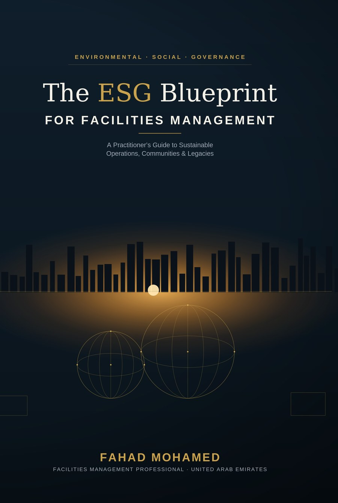

A Practitioner's Guide to Sustainable Operations, Communities & Legacies
"ESG is no longer a boardroom abstraction. It is the daily work of the people who run our buildings."
Buildings account for nearly 40% of global energy use and 38% of energy-related CO₂ emissions — more than every car, ship, and aircraft combined. Yet the professionals who run those buildings remain almost absent from the sustainability conversation.
That oversight ends here. Written by a facilities management professional with more than two decades of operational experience across UAE master communities and large-scale infrastructure, this guide closes the gap between what ESG frameworks require and what actually happens at the meter, the valve, and the switch.
Every chapter opens in an operations room, not a boardroom — with the frameworks, benchmarks, and field-tested tools that turn FM expertise into measurable ESG performance.
Energy, water, waste, and the practical path to carbon-neutral operations — the systems and metrics that actually move the needle.
Indoor environment quality, workforce wellbeing, and community at scale — the human side of ESG that frameworks often miss.
Data, procurement, and reporting that survives scrutiny — building an audit-grade paper trail from day-to-day operations.
UAE regulatory context, five field case studies drawn from real portfolios, a full FM ESG audit checklist, and a regulatory reference section built for practitioners, not policymakers.
Real passages from the manuscript will appear here — chapter openers, field case studies, and the practitioner notes that give this book its edge. Reserved for Fahad's own words once shared, not paraphrased or invented.
Facilities management professional based in the UAE, with over two decades of experience across master communities, mixed-use developments, and large-scale infrastructure. He writes and speaks on ESG, asset management, and the future of FM in the Gulf.